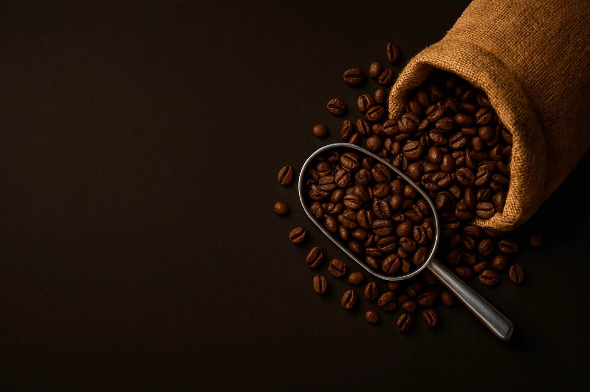
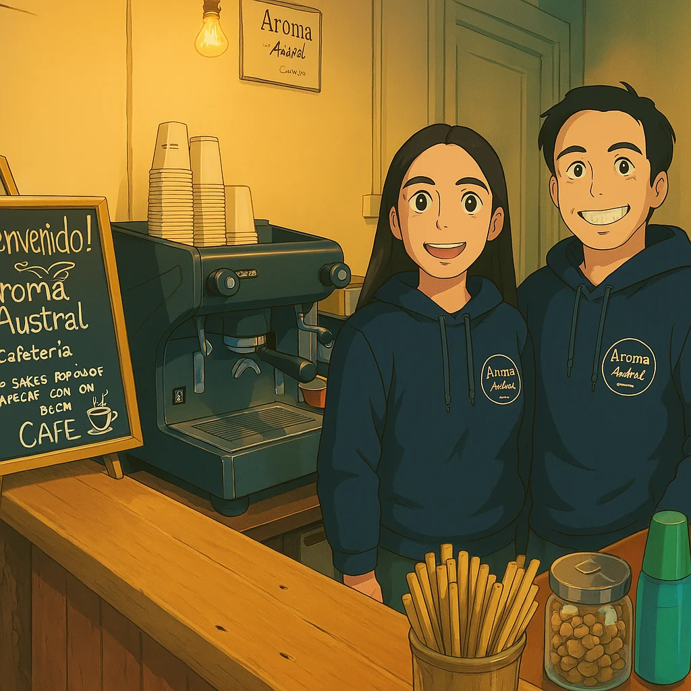

Nuestra historia
Una cafetería con alma, en el corazón de la Patagonia chilena.
Pasión por el café en el fin del mundo
Aroma Austral nació del sueño de compartir momentos cálidos y auténticos en medio de la belleza natural de Aysén. Fundada en Villa Amengual, nuestra cafetería combina café de especialidad, productos caseros y una atención cercana, pensada para locales y viajeros. Cada taza que servimos refleja nuestro compromiso con la calidad y el cariño por lo que hacemos.
¿Qué nos hace únicos?
- ☕ Café 100% tostado en la Patagonia, preparado por baristas apasionados.
- 🍰 Repostería y comida hecha en casa con ingredientes locales.
- 🌄 Ubicación privilegiada en plena Carretera Austral.
- 🤎 Atención personalizada que te hace sentir como en casa.

Lo que dicen nuestros clientes
"¡We didn’t expect to find top quality coffee/hot chocolate and cake in such a remote location! ..."
"Un oasis de calor de hogar en medio de la carretera austral. Cafetería acogedora, donde te ofrecen un café delicioso con unas tartas increíbles! ..."
"Que belleza de lugar, que rico café y chocolate caliente... lo recomiendo!!👏👏👏👏"